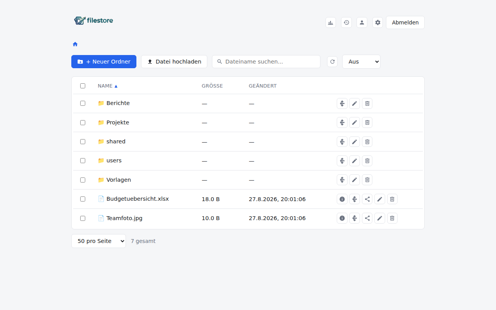
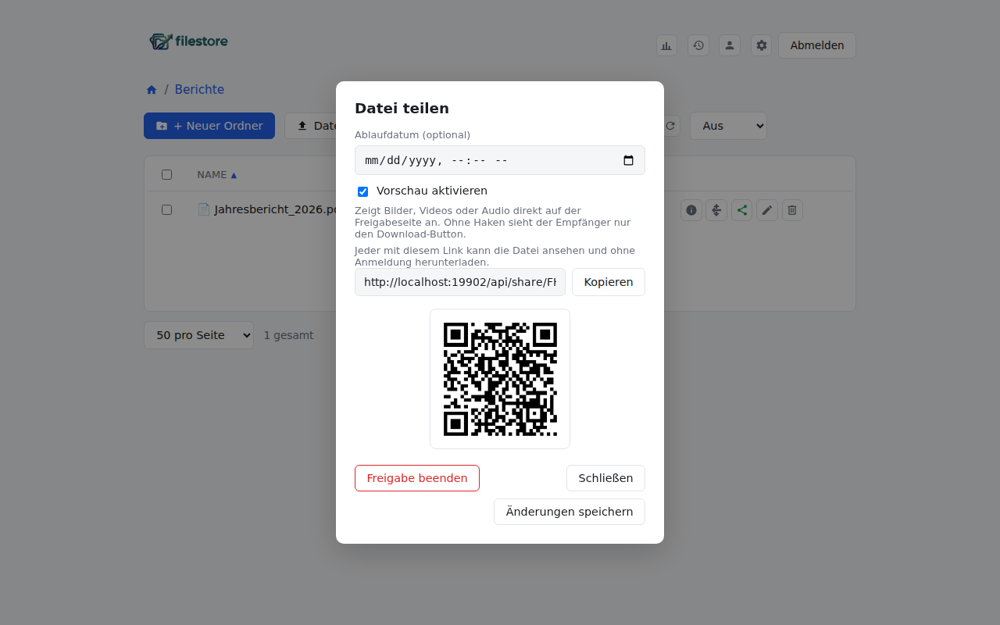
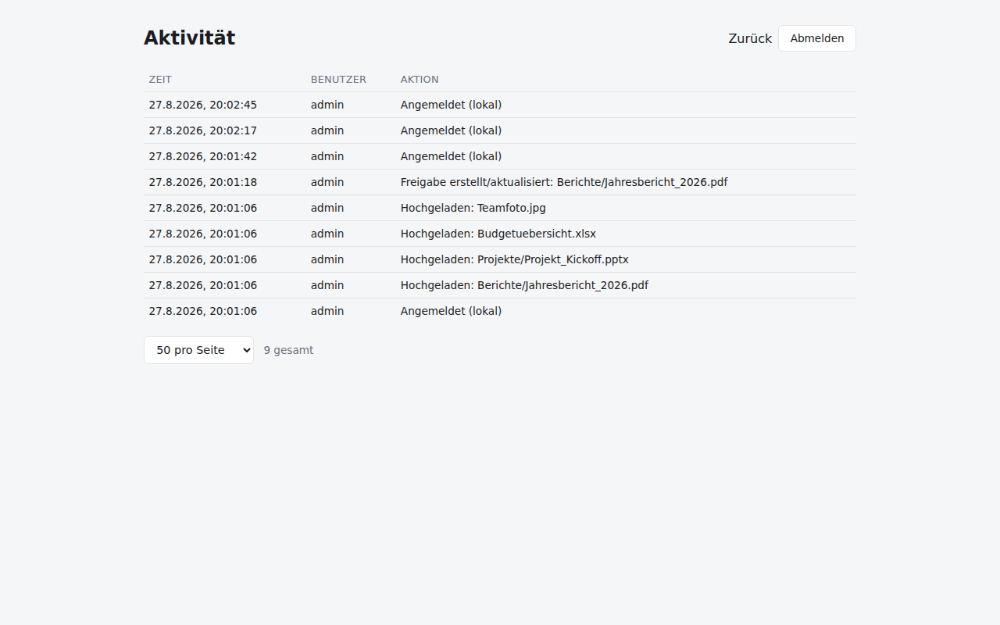
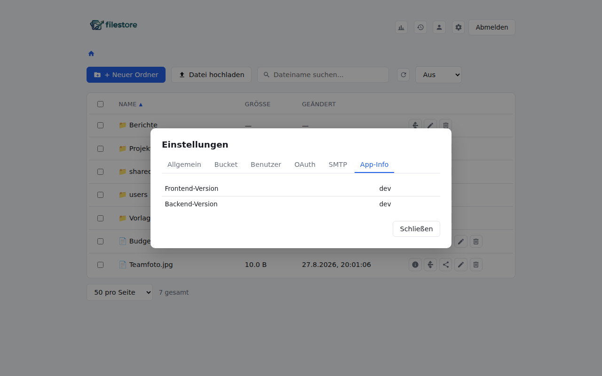
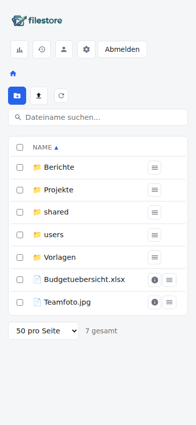

A self-hosted, MinIO-backed file manager: browse, upload, share and organize files in your own S3-compatible bucket, with local or OIDC/OAuth login and a mobile-friendly UI.
Plug in any generic OIDC provider alongside the built-in local admin account.
Expiring links, optional inline preview, QR codes, and per-recipient email invites.
Every file remembers who uploaded it — surviving renames and moves.
User management, SMTP settings with test-email, and a paginated activity log.
Collapsible action menus, an info popover for details, and icon-only controls.
Sort by name, size or date; page through large listings 25/50/100/all at a time.




